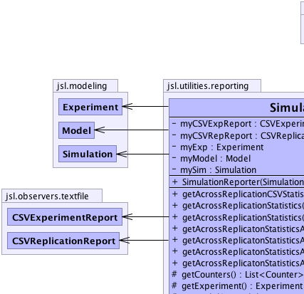
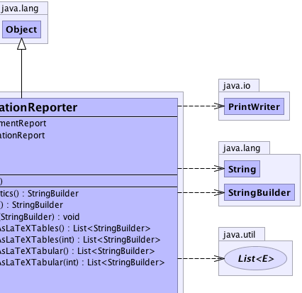
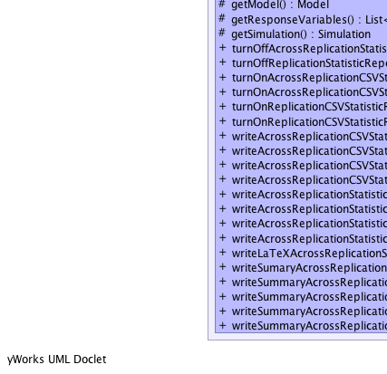
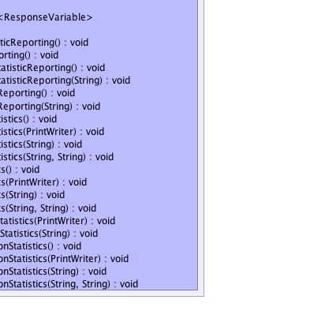

jsl.utilities.reporting.SimulationReporter
jsl.utilities.reporting.SimulationReporter
|
||||||||||
| PREV CLASS NEXT CLASS | FRAMES NO FRAMES | |||||||||
| SUMMARY: NESTED | FIELD | CONSTR | METHOD | DETAIL: FIELD | CONSTR | METHOD | |||||||||
java.lang.Object
public class SimulationReporter
|  |  |
|  |  |
| Field Summary | |
|---|---|
private CSVExperimentReport |
myCSVExpReport
|
private CSVReplicationReport |
myCSVRepReport
|
private Experiment |
myExp
|
private Model |
myModel
|
private Simulation |
mySim
|
| Constructor Summary | |
|---|---|
SimulationReporter(Simulation sim)
|
|
| Method Summary | |
|---|---|
java.lang.StringBuilder |
getAcrossReplicationCSVStatistics()
Uses a StringBuilder to hold the across replication statistics formatted as a comma separated values with an appropriate header |
java.lang.StringBuilder |
getAcrossReplicationStatistics()
Returns a StringBuilder with across replication statistics |
void |
getAcrossReplicationStatistics(java.lang.StringBuilder sb)
Fills the StringBuilder with across replication statistics |
java.util.List<java.lang.StringBuilder> |
getAcrossReplicatonStatisticsAsLaTeXTables()
List of StringBuilder representing LaTeX tables max 60 rows |
java.util.List<java.lang.StringBuilder> |
getAcrossReplicatonStatisticsAsLaTeXTables(int maxRows)
List of StringBuilder representing LaTeX tables |
java.util.List<java.lang.StringBuilder> |
getAcrossReplicatonStatisticsAsLaTeXTabular()
Gets shortened across replication statistics for response variables as a LaTeX tabular. |
java.util.List<java.lang.StringBuilder> |
getAcrossReplicatonStatisticsAsLaTeXTabular(int maxRows)
Gets shortened across replication statistics for response variables as a LaTeX tabular. |
protected java.util.List<Counter> |
getCounters()
|
protected Experiment |
getExperiment()
|
protected Model |
getModel()
|
protected java.util.List<ResponseVariable> |
getResponseVariables()
|
protected Simulation |
getSimulation()
|
void |
turnOffAcrossReplicationStatisticReporting()
Detaches a CSVExperimentReport from the model |
void |
turnOffReplicationStatisticReporting()
Detaches a CSVReplicationReport from the model |
void |
turnOnAcrossReplicationCSVStatisticReporting()
Attaches a CSVExperimentReport to the model to record across replication statistics to a file |
void |
turnOnAcrossReplicationCSVStatisticReporting(java.lang.String name)
Attaches a CSVExperimentReport to the model to record across replication statistics to a file |
void |
turnOnReplicationCSVStatisticReporting()
Attaches a CSVReplicationReport to the model to record within replication statistics to a file |
void |
turnOnReplicationCSVStatisticReporting(java.lang.String name)
Attaches a CSVReplicationReport to the model to record within replication statistics to a file |
void |
writeAcrossReplicationCSVStatistics()
Writes the across replication statistics as comma separated values to System.out |
void |
writeAcrossReplicationCSVStatistics(java.io.PrintWriter out)
Writes the across replication statistics to the supplied PrintWriter as comma separated value output |
void |
writeAcrossReplicationCSVStatistics(java.lang.String fName)
Creates a PrintWriter with the supplied name in directory jslOutput and writes out the across replication statistics |
void |
writeAcrossReplicationCSVStatistics(java.lang.String directory,
java.lang.String fName)
Creates a PrintWriter with the supplied name in directory jslOutput and writes out the across replication statistics |
void |
writeAcrossReplicationStatistics()
Writes the across replication statistics as text values to System.out |
void |
writeAcrossReplicationStatistics(java.io.PrintWriter out)
Writes the across replication statistics to the supplied PrintWriter as text output |
void |
writeAcrossReplicationStatistics(java.lang.String fName)
Creates a PrintWriter with the supplied name in directory jslOutput and writes out the across replication statistics |
void |
writeAcrossReplicationStatistics(java.lang.String directory,
java.lang.String fName)
Creates a PrintWriter with the supplied name in directory within jslOutput and writes out the across replication statistics |
void |
writeLaTeXAcrossReplicationStatistics(java.io.PrintWriter out)
Writes shortened across replication statistics to the supplied PrintWriter as text output Response Name Average Std. |
void |
writeSumaryAcrossReplicationStatistics(java.lang.String fName)
Creates a PrintWriter with the supplied name in directory jslOutput and writes out the across replication statistics |
void |
writeSummaryAcrossReplicationStatistics()
Writes the across replication statistics as text values to System.out |
void |
writeSummaryAcrossReplicationStatistics(java.io.PrintWriter out)
Writes shortened across replication statistics to the supplied PrintWriter as text output Response Name Average Std. |
void |
writeSummaryAcrossReplicationStatistics(java.lang.String fName)
Creates a PrintWriter with the supplied name in directory jslOutput and writes out the across replication statistics |
void |
writeSummaryAcrossReplicationStatistics(java.lang.String directory,
java.lang.String fName)
Creates a PrintWriter with the supplied name in directory within jslOutput and writes out the across replication statistics |
| Methods inherited from class java.lang.Object |
|---|
clone, equals, finalize, getClass, hashCode, notify, notifyAll, toString, wait, wait, wait |
| Field Detail |
|---|
private Simulation mySim
private Model myModel
private Experiment myExp
private CSVReplicationReport myCSVRepReport
private CSVExperimentReport myCSVExpReport
| Constructor Detail |
|---|
public SimulationReporter(Simulation sim)
| Method Detail |
|---|
protected final Simulation getSimulation()
protected final Model getModel()
protected final Experiment getExperiment()
protected final java.util.List<ResponseVariable> getResponseVariables()
protected final java.util.List<Counter> getCounters()
public java.lang.StringBuilder getAcrossReplicationCSVStatistics()
public final void writeAcrossReplicationCSVStatistics(java.io.PrintWriter out)
out - public final void writeAcrossReplicationStatistics(java.io.PrintWriter out)
out - public final void writeSummaryAcrossReplicationStatistics(java.io.PrintWriter out)
out - public final java.lang.StringBuilder getAcrossReplicationStatistics()
public final void getAcrossReplicationStatistics(java.lang.StringBuilder sb)
sb - public final void writeAcrossReplicationCSVStatistics()
public final void writeAcrossReplicationCSVStatistics(java.lang.String directory,
java.lang.String fName)
directory - fName - public final void writeAcrossReplicationCSVStatistics(java.lang.String fName)
fName -
public final void writeAcrossReplicationStatistics(java.lang.String directory,
java.lang.String fName)
directory - fName - public final void writeAcrossReplicationStatistics(java.lang.String fName)
fName - public final void writeAcrossReplicationStatistics()
public final void writeSummaryAcrossReplicationStatistics()
public final void writeSummaryAcrossReplicationStatistics(java.lang.String directory,
java.lang.String fName)
directory - fName - public final void writeSummaryAcrossReplicationStatistics(java.lang.String fName)
fName - public final void writeSumaryAcrossReplicationStatistics(java.lang.String fName)
fName - public final void turnOnReplicationCSVStatisticReporting()
public final void turnOnReplicationCSVStatisticReporting(java.lang.String name)
name - public final void turnOffReplicationStatisticReporting()
public final void writeLaTeXAcrossReplicationStatistics(java.io.PrintWriter out)
out - public final java.util.List<java.lang.StringBuilder> getAcrossReplicatonStatisticsAsLaTeXTables()
public final java.util.List<java.lang.StringBuilder> getAcrossReplicatonStatisticsAsLaTeXTables(int maxRows)
maxRows -
public final java.util.List<java.lang.StringBuilder> getAcrossReplicatonStatisticsAsLaTeXTabular()
public final java.util.List<java.lang.StringBuilder> getAcrossReplicatonStatisticsAsLaTeXTabular(int maxRows)
maxRows - maximum number of rows in each tabular
public final void turnOnAcrossReplicationCSVStatisticReporting()
public final void turnOnAcrossReplicationCSVStatisticReporting(java.lang.String name)
name - public final void turnOffAcrossReplicationStatisticReporting()
|
||||||||||
| PREV CLASS NEXT CLASS | FRAMES NO FRAMES | |||||||||
| SUMMARY: NESTED | FIELD | CONSTR | METHOD | DETAIL: FIELD | CONSTR | METHOD | |||||||||